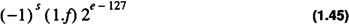
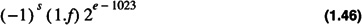
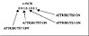

by Alan Parker
CRC Press, CRC Press LLC
ISBN: 0849371716 Pub Date: 08/01/93
|
|
Algorithms and Data Structures in C++
by Alan Parker CRC Press, CRC Press LLC ISBN: 0849371716 Pub Date: 08/01/93 |
| Previous | Table of Contents | Next |
The IEEE 32-bit standard is often referred to as single precision format. It consists of a 23-bit fraction or mantissa, f, an 8-bit biased exponent, e, and a sign bit, s. Results are normalized after each operation. This means that the most significant bit of the fraction is forced to be a one by adjusting the exponent. Since this bit must be one it is not stored as part of the number. This is called the implicit bit. A number then becomes

The number zero, however, cannot be scaled to begin with a one. For this case the standard indicates that 32-bits of zeros is used to represent the number zero.
The IEEE 64-bit standard is often referred to as double precision format. It consists of a 52-bit fraction or mantissa, f, an 11-bit biased exponent, e, and a sign bit, s. As in single precision format the results are normalized after each operation. A number then becomes

The number zero, however, cannot be scaled to begin with a one. For this case the standard indicates that 64-bits of zeros is used to represent the number zero.
A C++ source program which demonstrates the IEEE floating point format is shown in Code List 1.5.
Code List 1.5 C++ Source Program
The output of the program is shown in Code List 1.6. The union operator allows a specific memory location to be treated with different types. For this case the memory location holds 32 bits. It can be treated as a long integer (an integer of 32 bits) or a floating point number. The union operator is necessary for this program because bit operators in C and C++ do not operate on floating point numbers. The float_point_32(float in=float(0.0)) {fp =in} function demonstrates the use of a constructor in C++. When a variable is declared to be of type float_point_32 this function is called. If a parameter is not specified in the declaration then the default value, for this case 0.0, is assigned. A declaration of float_point_32 x(0.1),y; therefore, would initialize x.fp to 0.1 and y.fp to 0.0.
Code List 1.6 Output of Program in Code List 1.5
The union float_point_64 declaration allows 64 bits in memory to be thought of as one 64-bit floating point number(double) or 2 32-bit long integers. The void float_number_32::fraction() demonstrates scoping in C++. For this case the function fraction() is associated with the class float_number_32. Since fraction was declared in the public section of the class float_-number_32 the function has access to all of the public and private functions and data associated with the class float_number_32. These functions and data need not be declared in the function. Notice for this example f.li is used in the function and only mask and i are declared locally. The setw() used in the cout call in float_number_64 sets the precision of the output. The program uses a number of bit operators in C++ which are described in the next section.
C++ has bitwise operators &, ^, |, and ~. The operators &, ^, and | are binary operators while the operator ~ is a unary operator.
The behavior of each operator is shown in Table 1.6.
| a | b | a&b | a^b | a|b | ~a | |
|---|---|---|---|---|---|---|
| 0 | 0 | 0 | 0 | 0 | 1 | |
| 0 | 1 | 0 | 1 | 1 | 1 | |
| 1 | 0 | 0 | 1 | 1 | 0 | |
| 1 | 1 | 1 | 0 | 1 | 0 |
To test out the derivation for calculating the 2’s complement of a number derived in Section 1.1.3 a program to calculate the negative of a number is shown in Code List 1.7. The output of the program is shown in Code List 1.8. Problem 1.11 investigates the output of the program.
Code List 1.7 Testing the Binary Operators in C++
Code List 1.8 Output of Program in Code List 1.7
A program demonstrating one of the most important uses of the OR operator, |, is shown in Code List 1.9. The output of the program is shown in Code List 1.10. Figure 1.1 demonstrates the value of x for the program. The eight attributes are packed into one character. The character field can hold 256 = 28 combinations handling all combinations of each attribute taking on the value ON or OFF. This is the most common use of the OR operators. For a more detailed example consider the file operation command for opening a file. The file definitions are defined in <iostream.h> by BORLAND C++ as shown in Table 1.7.

Figure 1.1 Packing Attributes into One Character
Code List 1.9 Bit Operators
Code List 1.10 Output of Program in Code List 1.9
| Source |
|---|
| enum open_mode { in = 0x01, // open for reading out = 0x02, // open for writing ate = 0x04, // seek to eof upon original open app = 0x08, // append mode: all additions at eof trunc = 0x10, // truncate file if already exists nocreate = 0x20, // open fails if file doesn’t exist noreplace= 0x40, // open fails if file already exists binary = 0x80 // binary (not text) file }; |
A program illustrating another use is shown in Code List 1.11. If the program executes correctly the output file, test.dat, is created with the string, “This is a test”, placed in it. The file, test.dat, is opened for writing with ios::out and for truncation with ios::trunc. The two modes are presented together to the ofstream constructor with the use of the or function.
Code List 1.11 Simple File I/O
| Previous | Table of Contents | Next |
)
){kind=link}
){kind=link}
){kind=link}
){kind=link}
){kind=link}
){kind=link}
){kind=link}
){kind=link}
){kind=link}
){kind=link}
){kind=link}